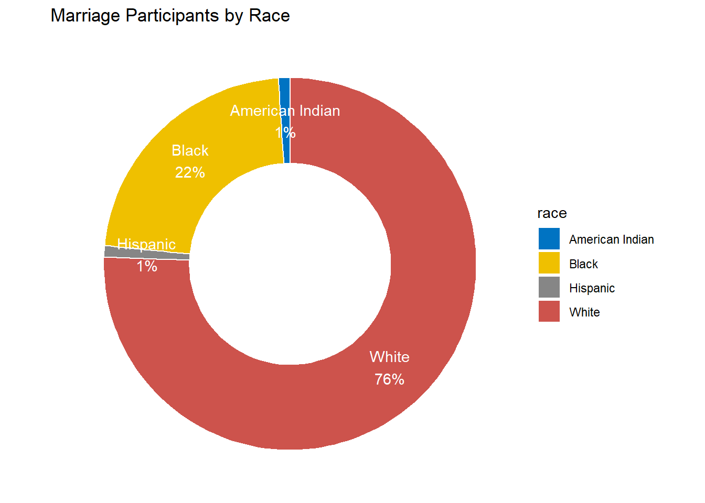

Chapter 2 Dasar-dasar R
Mari kita mulai terlebih dahulu dengan dasar-dasar R. Jika Anda sudah memiliki pengalaman dengan R, Anda mungkin dapat melewati bagian ini. Saya sangat menyarankan Anda untuk bekerja dengan RStudio Integrated Development Environment (IDE). Pastikan juga Anda mengerti dua jenis file R:
.Rfile teksASCIIyang hanya berisi skrip R..Rmdfile teksASCII. Jika dibuka di RStudio dapat dijalankan sebagai R-Notebook atau dikompilasi menggunakan knitr, bookdown, dll.
2.1 Operator Penugasan
Di sini saya merekapitulasi beberapa operator penugasan yang perlu Anda ketahui agar Anda terbiasa dengan kode R:
<-dikenal sebagai operator penugasan. Artinya, “Buat nama objek di sebelah kiri sama dengan output dari koding di sebelah kanan”&Berarti AND, dalam logika Boolean|berarti OR, dalam logika Boolean.!berarti NOT, dalam logika Boolean.- Ketika merujuk pada nilai yang dimasukkan sebagai teks, atau tanggal, masukkanlah dengan tanda kutip, seperti ini: “Amerika Serikat”, atau “2016-07-26”. Angka tidak dikutip.
- Saat memasukkan dua atau lebih nilai sebagai daftar (list), gabungkanlah dengan menggunakan fungsi
c, dengan nilai yang dipisahkan oleh koma, misalnya:c ("2020-07-26", "2020-08-04"). - Seperti dalam spreadsheet, Anda dapat menentukan rentang nilai dengan titik dua, misalnya:
c (1:10), fungsi ini menghasilkan daftar bilangan bulat dari satu hingga sepuluh.
Beberapa operator umum:
+ -tambah, kurang;* /kali, bagi;> <lebih besar dari, kurang dari;>= <=lebih besar dari atau sama dengan, kurang dari atau sama dengan;!=tidak sama dengan.- Tanda sama dengan bisa sedikit membingungkan, tetapi lihat bagaimana mereka digunakan dalam kode yang kita gunakan hari ini:
==menguji apakah suatu objek sama dengan nilai. Tanda Ini sering digunakan saat memfilter data;=membuat objek sama dengan nilai; bekerja seperti<-, tetapi digunakan di dalam tanda kurung dari sebuah fungsi.$untuk menentukan kolom individual dengan memisahkan nama frame data dan nama kolom. Catatan Objek dan nama variabel dalam R tidak boleh berisi spasi.
2.2 Kalkulator Sederhana Dalam R
| Contoh | Operator S | yntax di R |
|---|---|---|
| 5+5 | Tambah | + |
| 5-5 | Kurang | - |
| 5x5 | Kali | * |
| 5:5 | Bagi | / |
| 5^5 | Pangkat | ^ |
| √25 | Akar kuadrat | sqrt |
| Log 5 | Logaritma | log() |
| Exp 5 | Eksponensial | exp() |
| (5/5)+5 | Tanda kurung | () |
2.2.1 Penugasan Variabel
Pertama, Anda harus menetapkan nilai ke variabel di konsol R Anda:
Kemudian, jalankan kode berikut di bawah ini baris demi baris untuk melihat hasilnya:
x + y # Tambah
x - y # Pengurangan
x * y # Perkalian
x / y # Pembagian
x ^ y # Pangkat
sqrt(x * y) # Akar kuadrat
log(x) # Logaritma
exp(y) # eksponensial
(x/y) + y # Tanda KurungAnda juga bisa melakukan perhitungan menggunakan nama variabel:
2.2.2 Probabilitas
R dapat digunakan sebagai kalkulator probabilitas. Anda mungkin berharap mengetahui ini ketika melakukan kelas Intro To Probability anda.
dbinom (x = 3, size = 10, prob = 0.5) # Fungsi Kepadatan (DF) P (X = 3)
dbinom (3, 10, 0.5) # hasil yang sama seperti di atas
pbinom (q = 3, size = 10, prob = 0.5) # Fungsi Distribusi Kumulatif
qbinom (p = 0.1718, size = 10, prob = 0.5) # kuantil untuk X ~ B (n = 10, p = 0.5)
rbinom (n = 10, size = 10, prob = 0.5) # menghasilkan variabel acak
#? distributions # Untuk informasi lebih lanjutR memiliki banyak distribusi bawaan. Nama mereka mungkin berubah, tetapi awalannya tetap tidak berubah, contoh:
dawalan untuk fungsi kerapatan (density function).pawalan untuk fungsi distribusi kumulatif (Cummulative distribution function/CDF).qawalan untuk fungsi kuantil (mis., CDF terbalik atau inverse CDF).rawalan untuk menghasilkan sampel acak.
Gunakanlah ide-ide dibawah ini dengan menggunakan beberapa distribusi CDF :
pbinom()untuk Binomial CDF.ppois()untuk Poisson CDF.pnorm()untuk Gaussian CDF.pexp()untuk Eksponensial CDF.
2.3 Bantuan
Salah satu bagian terpenting dari bekerja dengan bahasa adalah mengetahui di mana mencari bantuan. Selain berbagai sumber daya bantuan dalam ekosistem R, selain itu R juga memiliki beberapa fasilitas in-line. Dapatkanlah bantuan untuk fungsi tertentu.
Jika Anda tidak tahu nama fungsi yang anda cari, carilah file bantuan lokal untuk string tertentu:
Atau memuat menu agar Anda dapat menavigasi bantuan lokal berbasis web:
2.4 Statistik Dasar
Mari kita terapkan beberapa output ke objek bernama “x”, lalu kita akan melihat beberapa statistik dasar:
x = rbinom (n = 10, size = 10, prob = 0.5) # ini berfungsi tetapi merupakan cara yang buruk.
x <- rbinom (n = 10, size = 10, prob = 0.5) # cara terbaikCatatan: Jika Anda terbiasa dengan bahasa pemrograman lain, Anda mungkin lebih menggunakan penugasan = daripada penugasan <-.
x # cetak konten suatu objek cukup ketik namanya
print (x) # mencetak konten suatu objek secara implisit
(x <- rbinom (n = 10, size = 10, prob = 0.5)) # cara alternatif untuk menetapkan dan mencetak
mean (x) # Menghitung rata-rata
var (x) # Menghitung variansi
sd (x) # Simpangan baku
hist (x) # Plot histogram
R menyimpan setiap objek yang Anda buat dalam RAM. Semua koleksi dari semua objek tersebut adalah ruang kerja yang dapat Anda periksa dengan:
ls () # Koleksi semua objek tersebut
ls (pattern = 'x') # menggunakan ls dengan pola teks
rm (x) # Menghapus variabel
ls () # MemverifikasiAnda mungkin berpikir bahwa jika suatu objek dihapus maka memorinya akan dilepaskan. Ini hampir benar, tergantung pada mekanisme negosiasi antara R dan sistem operasi.
2.5 Piping
Karena R berasal dari lingkungan seperti Unix dan Linux, ia mewarisi banyak ragamnya. Piping adalah ide yang diambil dari shell Linux yang memungkinkan untuk menggunakan output dari satu ekspresi sebagai input ke yang lain. Dengan demikian, Piping membuat kode lebih mudah dibaca dan ditulis.
# Prasyarat:
library(magrittr) # Memuat fungsi piping
# help(package = "magrittr") # Memuat informasi `magrittr`
x <- rbinom(n=1000, size=10, prob=0.5) # Menghasilkan beberapa sampel data
# Contoh:
x %>% var() # Bukan `var(x)`
x %>% hist() # Sebagai ganti `hist(x)`
Contoh berikutnya menunjukkan manfaat dari piping. Dua potongan kode selanjutnya melakukan hal yang sama. Coba uraikan dalam pikiran Anda:
# Gaya fungsional Onion style
car_data <-
transform(aggregate(. ~ cyl,
data = subset(mtcars, hp > 100),
FUN = function(x) round(mean(x, 2))),
kpl = mpg*0.4251)# Piping (magrittr) style
car_data <- mtcars %>%
subset(hp > 100) %>%
aggregate(. ~ cyl, data = ., FUN = . %>% mean %>% round(2)) %>%
transform(kpl = mpg %>% multiply_by(0.4251)) %>%
print()Tip: RStudio memiliki jalan pintas melalui keyboard untuk operator %>%. Coba Ctrl+Shift+m.
2.6 Membuat Vektor
Elemen paling dasar dalam R adalah vektor. Kita sekarang akan melihat cara membuat vector dan mengakses elemen-elemen (yaitu, subset). Berikut adalah tiga cara untuk membuat vektor yang sama:
c(10,11,12,13,14,15,16,17,18,19,20,21) # Membuat vektor secara manual
10:21 # Menggunakan operator `:`
seq(from=10, to=21, by=1) # fungsi `seq()` dengan "by"
seq(from=10, to=21, len=12) # fungsi `seq()` dengan "len"
x <- 10:21 # Mari kita tetapkan ke objek bernama "x"
x+2 # Operasi biasanya bekerja berdasarkan elemen
x*2 # Tambahkan 2 untuk setiap elemen `x`
x^2 # Pangkat 2 untuk setiap elemen `x`
sqrt(x) # Akar kuadrat untuk setiap elemen ‘x’
log(x) # Logaritma untuk setiap elemen 'x’
x <- c(0.5, 0.6) # Numerik
x <- c(TRUE, FALSE) # Logis
x <- c(T, F) # Logis
x <- c("a", "b", "c") # Karakter
x <- 9:29 # Integer
x <- c(1+0i, 2+4i) # Kompleks
x <- vector("numeric", length = 10) # fungsi `vektor ()` untuk menginisialisasi vektor.
y <- c(1.7, "a") # Karakter
y <- c(TRUE, 2) # Numerik
y <- c("a", TRUE) # Numerik
typeof(y) # Untuk memeriksa jenis `y`
class(y) # Untuk memeriksa jenis `y`Catatan: Menurut dokumentasi R untuk typeof() dan class(), pernyataan tentang “perbedaan utama/main difference” adalah tidak benar. Kelas adalah atribut dari objek yang dapat ditetapkan terlepas dari mode penyimpanan internalnya, sedangkan typeof() menentukan tipe (R internal) atau mode penyimpanan dari objek apa pun. Satu menggambarkan karakteristik logis sedangkan yang lain adalah karakteristik fisik dari suatu objek.
x <- 0:10 # Mari tetapkan ke objek bernama `x`
class(x) # Periksa kelas `x`
as.numeric(x) # Menetapkan `x` sebagai numerik
as.logical(x) # Menetapkan `x` sebagai logis
as.character(x) # Menetapkan `x` sebagai karakter
as.numeric(c(FALSE,TRUE,TRUE,FALSE)) # Menetapkan vektor logis sebagai angka Terkadang, R tidak dapat menemukan cara untuk memaksa suatu objek dan ini dapat menghasilkan NA.
## Warning: NAs introduced by coercion## Warning: NAs introduced by coercionCatatan: Saat paksaan tidak masuk akal terjadi, Anda biasanya akan mendapat peringatan dari R.
Kita sudah melihat bahwa elemen dasar dari objek R adalah vektor. Vektor dapat ditetapkan dengan berbagai jenis berikut:
- character: di mana setiap elemen adalah string, mis., urutan simbol alfanumerik.
- numeric: di mana setiap elemen adalah bilangan real dalam format floating point presisi ganda.
- integer: di mana setiap elemen adalah integer.
- logis: di mana setiap elemen adalah TRUE, FALSE, atau NA3
- complex: di mana setiap elemen adalah bilangan kompleks.
2.7 Matriks
Matriks adalah vektor dengan atribut dimensi. Atribut dimensi itu sendiri merupakan vektor integer dengan panjang 2 (jumlah baris, jumlah kolom)
m <- matrix(nrow = 2, ncol = 3) # Membuat matriks `NA` sebanyak 2x3
m # Mencetak hasilnya
dim(m) # Memeriksa dimensi
attributes(m) # Memeriksa dimensiMatriks dibuat berdasarkan kolom, sehingga entri dapat dianggap dimulai dari sudut “kiri atas” dan mengalir di kolom.
Matriks juga dapat dibuat langsung dari vektor dengan menambahkan atribut dimensi.
m <- 1:10 # Membuat vektor `m`
dim(m) <- c(2, 5) # Menetapkan vektor `m` sebagai matriks sebesar 2x5
m # Mencetak hasilnyaMatriks dapat dibuat dengan pengikatan kolom atau pengikatan baris dengan fungsi cbind() dan rbind().
2.8 Daftar
Daftar (Lists) adalah jenis vektor khusus yang dapat berisi elemen dari kelas yang berbeda. List merupakan tipe data yang sangat penting dalam R dan Anda harus mengenalnya dengan baik. List, dalam kombinasi dengan berbagai fungsi “apply” yang akan dibahas nanti, membuat kombinasi yang kuat. List dapat dibuat secara eksplisit menggunakan fungsi list(), yang mengambil sejumlah argumen arbitrer.
Secara umum Anda dapat menggunakan dua operasi pengindeksan yang berbeda pada List:
- Kurung tunggal untuk mengembalikan daftar elemen yang dipilih
([]) - Kurung ganda untuk mengembalikan elemen tunggal
([[]])
x <- list(1:5,c("a","b","c"),TRUE,7,5) # Membuat daftar (list) vektor `x`
x[1] # Kurung tunggal
x[[1]] # Kurung ganda
typeof(x[2]) # Memeriksa jenis objek menggunakan []
typeof(x[[2]]) # Memeriksa jenis objek menggunakan [[]]
x[c(1,2)] # list vektor pertama dan keduaKita juga dapat membuat daftar (list) dengan mengganti objek kosong yang ada seperti yang Anda lihat dalam kode berikut:
x <- vector("list", length = 3) # Membuat daftar (list) kosong (sesuai kebutuhan)
name <- c("a","b","c","d") # Membuat objek sebagai variabel `name`
age <- c(18, 19, 20, 21) # Membuat objek sebagai variabel `age`
gender<- c(1, 0, 0, 1) # Membuat objek sebagai variabel `gender`
x[[1]] <- name # Tambah / ganti objek ke daftar `x`
x[[2]] <- age # Tambah / ganti objek ke daftar `x`
x[[3]] <- gender # Tambah / ganti objek ke daftar `x`
x # Cetak hasil akhir2.9 Faktor
Faktor-faktor digunakan untuk mewakili data kategorikal dan dapat menjadi tidak teratur atau teratur. Orang dapat menganggap faktor sebagai vektor integer di mana setiap integer memiliki label. Faktor-faktor menjadi penting dalam pemodelan statistik dan diperlakukan secara khusus oleh fungsi pemodelan seperti lm() dan glm().
Menggunakan faktor dengan label lebih baik daripada menggunakan bilangan bulat karena faktor menggambarkan diri sendiri. Memiliki variabel yang memiliki nilai “Laki-laki” dan “Perempuan” lebih baik daripada variabel yang memiliki nilai 1 dan 2. Objek-objek dapat dibuat dengan fungsi faktor().
2.10 Data Frame
Kerangka data (data frame) adalah tabel atau struktur mirip array dua dimensi di mana setiap kolom berisi nilai satu variabel dan setiap baris berisi satu set nilai dari setiap kolom.
Berikut ini adalah karakteristik data frame.
- Nama kolom tidak boleh kosong;
- Nama baris harus unik;
- Data yang disimpan dalam data frame bisa dari numerik, faktor atau tipe karakter;
- Setiap kolom harus berisi jumlah item data yang sama.
# Buat data frame pertama.
df1 <- data.frame(id = c (1:5),
name = c("Julian","Vanessa","Jeffry","Angel","Nikki"),
salary = c(623.3,515.2,611.0,729.0,843.25),
start_date = as.Date(c("2022-01-01", "2022-09-23", "2022-11-15", "2022-05-11", "2022-03-27")),
dept = c("DS","DS","BA","DA","DS"), stringsAsFactors = F)
df1# Buat data frame kedua.
df2 <-data.frame(id = c (6:10),
name = c("Ardifo","Irene","Kefas","Sherly","Bakti"),
salary = c(578.0,722.5,632.8,632.8,NA),
start_date = as.Date(c("2022-05-21","2022-07-30","2022-06-17",
"2022-07-30","2018-09-03")),
dept = c("Actuaries","Actuaries","CA","DE","Lecturer"),stringsAsFactors = F)
df2df3 <- rbind(df1,df2) # Gabungkan dua frame data
print(df3) # Cetak hasilnya `df3`
head(df3) # Cetak enam baris pertama
head(df3,6) # Cetak enam baris pertama
#View(df3) # Menggunakan RStudio seperti penampil Excel
class(df3) # objeknya bertipe data.frame
str(df3) # Dapatkan struktur data frame
dim(df3) # Periksa dimensi dataData frame biasanya dibuat dengan membaca dalam dataset menggunakan read.table() atau read.csv (). Namun, data frame juga dapat dibuat secara eksplisit dengan fungsi data.frame() atau mereka dapat dipaksakan dari jenis objek lain seperti list.
2.11 Menghasilkan Data Frame
Sebagai seorang Data Scientist, ketika mencoba mennyimulasikan proses analisis data, pemodelan, dan bahkan prediksi, Anda harus mampu secara intuitif membangun dataframe untuk memperkirakan kumpulan data sampel. Terutama, ketika Anda tidak memiliki kumpulan data sampel sama sekali. Oleh karena itu, pada bagian ini, kita akan belajar sedikit mengenai cara menghasilkan dataframe. Harap pertimbangkan baik-baik contoh berikut:
# Misalkan Anda ingin membangun kumpulan data karyawan di sebuah perusahaan
No<-(1:52) # Menghasilkan bilangan 1-52
Name<-c(LETTERS,letters) # 26 LETTERS dan 26 letters
Gender<-sample(rep(c("Male","Female"),times=26)) # 26 Laki-laki dan 26 perempuan
# Menghasilkan tanggal lahir
year_in_3<-seq(as.Date("2000/01/01"), by="year", length.out=4)
Birthday <- rep(year_in_3, times=13)
# Menghasilkan kategori universitas
univ1<-rep("National",times=26) # 26 universitas negeri
univ2<-rep("Private",times=16) # 16 universitas swasta
univ3<-rep("Overseas",times=10) # 10 universitas luar negeri
Universities<-sample(c(univ1,univ2,univ3)) # Menggabungkan data (vetor)
gpa<-runif(52,min=3.00,max=4.00) # Menghasilkan 52 bilangan acak (min=3, dan max=4)
GPA<-round(gpa,digits=2) # Mengatur digit bilangan acak Anda
Salary<-sample(600:1200,52,replace=T) # Menghasilakn sampel antara 600-1200 (memungkinkan nilai duplikat)
Employees<-data.frame(No,
Name,
Birthday,
Gender,
Universities,
GPA,
Salary)
Employees## No Name Birthday Gender Universities GPA Salary
## 1 1 A 2000-01-01 Female Private 3.95 1018
## 2 2 B 2001-01-01 Female National 3.86 848
## 3 3 C 2002-01-01 Female National 3.88 608
## 4 4 D 2003-01-01 Female Private 3.92 836
## 5 5 E 2000-01-01 Male National 3.87 763
## 6 6 F 2001-01-01 Female Private 3.41 807
## 7 7 G 2002-01-01 Female Private 3.78 1019
## 8 8 H 2003-01-01 Male Overseas 3.01 839
## 9 9 I 2000-01-01 Male Overseas 3.07 1068
## 10 10 J 2001-01-01 Female Overseas 3.78 1170
## 11 11 K 2002-01-01 Female Private 3.29 1019
## 12 12 L 2003-01-01 Male Private 3.83 978
## 13 13 M 2000-01-01 Male National 3.49 873
## 14 14 N 2001-01-01 Male National 3.42 882
## 15 15 O 2002-01-01 Male Private 3.21 1141
## 16 16 P 2003-01-01 Female Overseas 3.13 705
## 17 17 Q 2000-01-01 Male Overseas 3.49 1005
## 18 18 R 2001-01-01 Male National 3.03 602
## 19 19 S 2002-01-01 Male National 3.04 1172
## 20 20 T 2003-01-01 Male National 3.83 878
## 21 21 U 2000-01-01 Female National 3.23 937
## 22 22 V 2001-01-01 Male Private 3.46 724
## 23 23 W 2002-01-01 Female National 3.38 880
## 24 24 X 2003-01-01 Female Private 3.52 636
## 25 25 Y 2000-01-01 Female Overseas 3.09 1049
## 26 26 Z 2001-01-01 Male Private 3.18 940
## 27 27 a 2002-01-01 Female Overseas 3.19 1001
## 28 28 b 2003-01-01 Male National 3.03 858
## 29 29 c 2000-01-01 Female National 3.57 760
## 30 30 d 2001-01-01 Female National 3.45 988
## 31 31 e 2002-01-01 Female National 3.67 1131
## 32 32 f 2003-01-01 Male Private 3.61 1021
## 33 33 g 2000-01-01 Male National 3.38 1104
## 34 34 h 2001-01-01 Female National 3.38 1063
## 35 35 i 2002-01-01 Female National 3.91 1065
## 36 36 j 2003-01-01 Male National 3.65 907
## 37 37 k 2000-01-01 Male National 3.98 1075
## 38 38 l 2001-01-01 Female National 3.76 621
## 39 39 m 2002-01-01 Male National 3.22 629
## 40 40 n 2003-01-01 Female National 3.00 1049
## 41 41 o 2000-01-01 Female Private 3.46 676
## 42 42 p 2001-01-01 Male National 3.75 1115
## 43 43 q 2002-01-01 Female Overseas 3.24 1079
## 44 44 r 2003-01-01 Male Overseas 3.43 644
## 45 45 s 2000-01-01 Male National 3.48 886
## 46 46 t 2001-01-01 Male Private 3.34 673
## 47 47 u 2002-01-01 Male Private 3.63 1176
## 48 48 v 2003-01-01 Female National 3.77 1024
## 49 49 w 2000-01-01 Female Overseas 3.66 1109
## 50 50 x 2001-01-01 Female National 3.89 1164
## 51 51 y 2002-01-01 Male Private 3.73 1153
## 52 52 z 2003-01-01 Male Private 3.83 8762.12 Ekstraksi
R menyediakan banyak cara untuk mengelompokkan dan mengekstrak elemen dari vektor dan objek lainnya. Dasar-dasarnya cukup sederhana, tetapi dengan tidak memperhatikan “kepribadian” dari setiap mekanisme ekstraksi dapat menyebabkan Anda sakit kepala. Sebagai permulaan, ekstraksi dilakukan dengan operator []. Operator dapat mengambil vektor dari banyak jenis.
#View(Employees) # Lihat dataset `Employees` (environment R)
typeof(Employees) # Memeriksa jenis data
class(Employees) # Memeriksa kelas data
Employees[1,5] # Mengekstrak elemen di baris ke-1 dan ke-5 kolom
Employees$Name # Mengekstrak kolom terntentu (`Name`)
Employees[,c('Name','Gender')] # Mengekstrak kolom tertentu (`Name, Gender`)
Employees[1:5,] # Mengekstrak lima baris pertama dari Employees
Employees[,1:5] # Mengekstrak lima kolom pertama dari Employees
subset(Employees, select=GPA) # Mengekstrak/subset kolom tertentu
subset(Employees, select=6) # Mengekstrak/subset kolom tertentu
subset(Employees, select= c(6,7)) # Mengekstrak/subset kolom pertama dan kedua
subset(Employees, select= c(2:5)) # Mengekstrak/subset kolom tertentuMenambah variabel baru ke dalam dataframe dapat dilakukan dengan menetapkan vektor baru. Kekuatan objek dataframe adalah menerima hampir semua jenis vektor, mis. integer, numerik, logika, faktor, dan karakter.
Employees$Tax <- Employees$Salary*0.03 # Tambahkan variabel baru 'Tax' ke dataframe Employess
Employees$Take_Home_Pay <- Employees$Salary-Employees$Tax # Tambahkan variabel baru 'Take_Home_Pay' ke dataframe Employess
Employees$Category_Salary1 <- Employees$Salary > 950 # Tambahkan variabel baru 'Category_Salary1' ke dataframe Employess
Employees$Category_Salary2<-ifelse(Employees$Salary > 950,
"High",
"Low") # Tambahkan variabel baru 'Category_Salary2' ke dataframe Employess
Employees$Category_Salary2<-factor(Employees$GPA >3.5 &
Employees$Salary>950,
labels = c("level1",
"level2"))
min(Employees$Salary) # Temukan nilai minimum dari `Salary`
max(Employees$Salary) # Temukan nilai mksimum dari `Salary`
mean(Employees$Salary) # Temukan nilai rata-rata dari `Salary`
var(Employees$Salary) # Temukan nilai variansi dari `Salary`
sd(Employees$Salary) # Temukan nilai standar deviasi dari `Salary`
summary(Employees) # Ringkasan statistik sederhana dari `Employees`Penting: Berhati-hatilah saat Anda mencoba mengekstrak kumpulan data yang berisi nilai yang hilang, jangan lupa mengabaikannya, atau menghapusnya terlebih dahulu. Mari kita lihat contoh berikut:
#View(mtcars) # Lihat dataset `mtcars` (environment R)
#?mtcars # Informasi detail tentang mtcars
min(mtcars$mpg ) # Temukan minimum gallon Miles/(US)
max(mtcars$mpg , na.rm = TRUE) # Temukan maksimum gallon Miles/(US)
mean(mtcars$mpg , na.rm = TRUE) # Temukan rata-rata gallon Miles/(US)
var(mtcars$mpg , na.rm = TRUE) # Temukan varians gallon Miles/(US)
sd(mtcars$mpg , na.rm = TRUE) # Temukan standar deviasi gallon Miles/(US)2.13 Mengubah Nama Data Frame
Objek R dapat memiliki nama, yang sangat berguna untuk menulis kode yang dapat dibaca dan menggambarkan objek sendiri. Di sini, Anda akan belajar cara mengganti nama kolom dari dataframe pada R menggunakan fungsi names().
rename_1<-Employees # Mengubah nama variabel
names(rename_1)<-c("no",
"nama",
"tgl.lahir",
"jenis.kelamin",
"universitas",
"ipk",
"gaji") # Mengubah nama variabel menjadi Indonesia
rename_1 # Cetak hasilnya## no nama tgl.lahir jenis.kelamin universitas ipk gaji NA NA NA
## 1 1 A 2000-01-01 Female Private 3.95 1018 30.54 987.46 TRUE
## 2 2 B 2001-01-01 Female National 3.86 848 25.44 822.56 FALSE
## 3 3 C 2002-01-01 Female National 3.88 608 18.24 589.76 FALSE
## 4 4 D 2003-01-01 Female Private 3.92 836 25.08 810.92 FALSE
## 5 5 E 2000-01-01 Male National 3.87 763 22.89 740.11 FALSE
## 6 6 F 2001-01-01 Female Private 3.41 807 24.21 782.79 FALSE
## 7 7 G 2002-01-01 Female Private 3.78 1019 30.57 988.43 TRUE
## 8 8 H 2003-01-01 Male Overseas 3.01 839 25.17 813.83 FALSE
## 9 9 I 2000-01-01 Male Overseas 3.07 1068 32.04 1035.96 TRUE
## 10 10 J 2001-01-01 Female Overseas 3.78 1170 35.10 1134.90 TRUE
## 11 11 K 2002-01-01 Female Private 3.29 1019 30.57 988.43 TRUE
## 12 12 L 2003-01-01 Male Private 3.83 978 29.34 948.66 TRUE
## 13 13 M 2000-01-01 Male National 3.49 873 26.19 846.81 FALSE
## 14 14 N 2001-01-01 Male National 3.42 882 26.46 855.54 FALSE
## 15 15 O 2002-01-01 Male Private 3.21 1141 34.23 1106.77 TRUE
## 16 16 P 2003-01-01 Female Overseas 3.13 705 21.15 683.85 FALSE
## 17 17 Q 2000-01-01 Male Overseas 3.49 1005 30.15 974.85 TRUE
## 18 18 R 2001-01-01 Male National 3.03 602 18.06 583.94 FALSE
## 19 19 S 2002-01-01 Male National 3.04 1172 35.16 1136.84 TRUE
## 20 20 T 2003-01-01 Male National 3.83 878 26.34 851.66 FALSE
## 21 21 U 2000-01-01 Female National 3.23 937 28.11 908.89 FALSE
## 22 22 V 2001-01-01 Male Private 3.46 724 21.72 702.28 FALSE
## 23 23 W 2002-01-01 Female National 3.38 880 26.40 853.60 FALSE
## 24 24 X 2003-01-01 Female Private 3.52 636 19.08 616.92 FALSE
## 25 25 Y 2000-01-01 Female Overseas 3.09 1049 31.47 1017.53 TRUE
## 26 26 Z 2001-01-01 Male Private 3.18 940 28.20 911.80 FALSE
## 27 27 a 2002-01-01 Female Overseas 3.19 1001 30.03 970.97 TRUE
## 28 28 b 2003-01-01 Male National 3.03 858 25.74 832.26 FALSE
## 29 29 c 2000-01-01 Female National 3.57 760 22.80 737.20 FALSE
## 30 30 d 2001-01-01 Female National 3.45 988 29.64 958.36 TRUE
## 31 31 e 2002-01-01 Female National 3.67 1131 33.93 1097.07 TRUE
## 32 32 f 2003-01-01 Male Private 3.61 1021 30.63 990.37 TRUE
## 33 33 g 2000-01-01 Male National 3.38 1104 33.12 1070.88 TRUE
## 34 34 h 2001-01-01 Female National 3.38 1063 31.89 1031.11 TRUE
## 35 35 i 2002-01-01 Female National 3.91 1065 31.95 1033.05 TRUE
## 36 36 j 2003-01-01 Male National 3.65 907 27.21 879.79 FALSE
## 37 37 k 2000-01-01 Male National 3.98 1075 32.25 1042.75 TRUE
## 38 38 l 2001-01-01 Female National 3.76 621 18.63 602.37 FALSE
## 39 39 m 2002-01-01 Male National 3.22 629 18.87 610.13 FALSE
## 40 40 n 2003-01-01 Female National 3.00 1049 31.47 1017.53 TRUE
## 41 41 o 2000-01-01 Female Private 3.46 676 20.28 655.72 FALSE
## 42 42 p 2001-01-01 Male National 3.75 1115 33.45 1081.55 TRUE
## 43 43 q 2002-01-01 Female Overseas 3.24 1079 32.37 1046.63 TRUE
## 44 44 r 2003-01-01 Male Overseas 3.43 644 19.32 624.68 FALSE
## 45 45 s 2000-01-01 Male National 3.48 886 26.58 859.42 FALSE
## 46 46 t 2001-01-01 Male Private 3.34 673 20.19 652.81 FALSE
## 47 47 u 2002-01-01 Male Private 3.63 1176 35.28 1140.72 TRUE
## 48 48 v 2003-01-01 Female National 3.77 1024 30.72 993.28 TRUE
## 49 49 w 2000-01-01 Female Overseas 3.66 1109 33.27 1075.73 TRUE
## 50 50 x 2001-01-01 Female National 3.89 1164 34.92 1129.08 TRUE
## 51 51 y 2002-01-01 Male Private 3.73 1153 34.59 1118.41 TRUE
## 52 52 z 2003-01-01 Male Private 3.83 876 26.28 849.72 FALSE
## NA
## 1 level2
## 2 level1
## 3 level1
## 4 level1
## 5 level1
## 6 level1
## 7 level2
## 8 level1
## 9 level1
## 10 level2
## 11 level1
## 12 level2
## 13 level1
## 14 level1
## 15 level1
## 16 level1
## 17 level1
## 18 level1
## 19 level1
## 20 level1
## 21 level1
## 22 level1
## 23 level1
## 24 level1
## 25 level1
## 26 level1
## 27 level1
## 28 level1
## 29 level1
## 30 level1
## 31 level2
## 32 level2
## 33 level1
## 34 level1
## 35 level2
## 36 level1
## 37 level2
## 38 level1
## 39 level1
## 40 level1
## 41 level1
## 42 level2
## 43 level1
## 44 level1
## 45 level1
## 46 level1
## 47 level2
## 48 level2
## 49 level2
## 50 level2
## 51 level2
## 52 level1Ini juga dapat diselesaikan menggunakan fungsi rename() [package dplyr]
## -- Attaching packages ------------------------------------------------------------------- tidyverse 1.3.0 --## v ggplot2 3.3.2 v purrr 0.3.4
## v tibble 3.0.3 v dplyr 1.0.2
## v tidyr 1.1.2 v stringr 1.4.0
## v readr 1.3.1 v forcats 0.5.0## -- Conflicts ---------------------------------------------------------------------- tidyverse_conflicts() --
## x tidyr::extract() masks magrittr::extract()
## x dplyr::filter() masks stats::filter()
## x dplyr::lag() masks stats::lag()
## x purrr::set_names() masks magrittr::set_names()Employees %>%
rename("no"= "No",
"nama" = "Name",
"tanggal.lahir" = "Birthday",
"jenis.kelamin" = "Gender" ,
"universitas" = "Universities" ,
"ipk"= "GPA",
"gaji"= "Salary")## no nama tanggal.lahir jenis.kelamin universitas ipk gaji Tax
## 1 1 A 2000-01-01 Female Private 3.95 1018 30.54
## 2 2 B 2001-01-01 Female National 3.86 848 25.44
## 3 3 C 2002-01-01 Female National 3.88 608 18.24
## 4 4 D 2003-01-01 Female Private 3.92 836 25.08
## 5 5 E 2000-01-01 Male National 3.87 763 22.89
## 6 6 F 2001-01-01 Female Private 3.41 807 24.21
## 7 7 G 2002-01-01 Female Private 3.78 1019 30.57
## 8 8 H 2003-01-01 Male Overseas 3.01 839 25.17
## 9 9 I 2000-01-01 Male Overseas 3.07 1068 32.04
## 10 10 J 2001-01-01 Female Overseas 3.78 1170 35.10
## 11 11 K 2002-01-01 Female Private 3.29 1019 30.57
## 12 12 L 2003-01-01 Male Private 3.83 978 29.34
## 13 13 M 2000-01-01 Male National 3.49 873 26.19
## 14 14 N 2001-01-01 Male National 3.42 882 26.46
## 15 15 O 2002-01-01 Male Private 3.21 1141 34.23
## 16 16 P 2003-01-01 Female Overseas 3.13 705 21.15
## 17 17 Q 2000-01-01 Male Overseas 3.49 1005 30.15
## 18 18 R 2001-01-01 Male National 3.03 602 18.06
## 19 19 S 2002-01-01 Male National 3.04 1172 35.16
## 20 20 T 2003-01-01 Male National 3.83 878 26.34
## 21 21 U 2000-01-01 Female National 3.23 937 28.11
## 22 22 V 2001-01-01 Male Private 3.46 724 21.72
## 23 23 W 2002-01-01 Female National 3.38 880 26.40
## 24 24 X 2003-01-01 Female Private 3.52 636 19.08
## 25 25 Y 2000-01-01 Female Overseas 3.09 1049 31.47
## 26 26 Z 2001-01-01 Male Private 3.18 940 28.20
## 27 27 a 2002-01-01 Female Overseas 3.19 1001 30.03
## 28 28 b 2003-01-01 Male National 3.03 858 25.74
## 29 29 c 2000-01-01 Female National 3.57 760 22.80
## 30 30 d 2001-01-01 Female National 3.45 988 29.64
## 31 31 e 2002-01-01 Female National 3.67 1131 33.93
## 32 32 f 2003-01-01 Male Private 3.61 1021 30.63
## 33 33 g 2000-01-01 Male National 3.38 1104 33.12
## 34 34 h 2001-01-01 Female National 3.38 1063 31.89
## 35 35 i 2002-01-01 Female National 3.91 1065 31.95
## 36 36 j 2003-01-01 Male National 3.65 907 27.21
## 37 37 k 2000-01-01 Male National 3.98 1075 32.25
## 38 38 l 2001-01-01 Female National 3.76 621 18.63
## 39 39 m 2002-01-01 Male National 3.22 629 18.87
## 40 40 n 2003-01-01 Female National 3.00 1049 31.47
## 41 41 o 2000-01-01 Female Private 3.46 676 20.28
## 42 42 p 2001-01-01 Male National 3.75 1115 33.45
## 43 43 q 2002-01-01 Female Overseas 3.24 1079 32.37
## 44 44 r 2003-01-01 Male Overseas 3.43 644 19.32
## 45 45 s 2000-01-01 Male National 3.48 886 26.58
## 46 46 t 2001-01-01 Male Private 3.34 673 20.19
## 47 47 u 2002-01-01 Male Private 3.63 1176 35.28
## 48 48 v 2003-01-01 Female National 3.77 1024 30.72
## 49 49 w 2000-01-01 Female Overseas 3.66 1109 33.27
## 50 50 x 2001-01-01 Female National 3.89 1164 34.92
## 51 51 y 2002-01-01 Male Private 3.73 1153 34.59
## 52 52 z 2003-01-01 Male Private 3.83 876 26.28
## Take_Home_Pay Category_Salary1 Category_Salary2
## 1 987.46 TRUE level2
## 2 822.56 FALSE level1
## 3 589.76 FALSE level1
## 4 810.92 FALSE level1
## 5 740.11 FALSE level1
## 6 782.79 FALSE level1
## 7 988.43 TRUE level2
## 8 813.83 FALSE level1
## 9 1035.96 TRUE level1
## 10 1134.90 TRUE level2
## 11 988.43 TRUE level1
## 12 948.66 TRUE level2
## 13 846.81 FALSE level1
## 14 855.54 FALSE level1
## 15 1106.77 TRUE level1
## 16 683.85 FALSE level1
## 17 974.85 TRUE level1
## 18 583.94 FALSE level1
## 19 1136.84 TRUE level1
## 20 851.66 FALSE level1
## 21 908.89 FALSE level1
## 22 702.28 FALSE level1
## 23 853.60 FALSE level1
## 24 616.92 FALSE level1
## 25 1017.53 TRUE level1
## 26 911.80 FALSE level1
## 27 970.97 TRUE level1
## 28 832.26 FALSE level1
## 29 737.20 FALSE level1
## 30 958.36 TRUE level1
## 31 1097.07 TRUE level2
## 32 990.37 TRUE level2
## 33 1070.88 TRUE level1
## 34 1031.11 TRUE level1
## 35 1033.05 TRUE level2
## 36 879.79 FALSE level1
## 37 1042.75 TRUE level2
## 38 602.37 FALSE level1
## 39 610.13 FALSE level1
## 40 1017.53 TRUE level1
## 41 655.72 FALSE level1
## 42 1081.55 TRUE level2
## 43 1046.63 TRUE level1
## 44 624.68 FALSE level1
## 45 859.42 FALSE level1
## 46 652.81 FALSE level1
## 47 1140.72 TRUE level2
## 48 993.28 TRUE level2
## 49 1075.73 TRUE level2
## 50 1129.08 TRUE level2
## 51 1118.41 TRUE level2
## 52 849.72 FALSE level1Jika dataframe Anda dihasilkan dari fungsi matrix(), Anda dapat mengubah nama kolom dan barisnya.
## AA BB
## A 1 27
## B 2 28
## C 3 29
## D 4 30
## E 5 31
## F 6 32
## G 7 33
## H 8 34
## I 9 35
## J 10 36
## K 11 37
## L 12 38
## M 13 39
## N 14 40
## O 15 41
## P 16 42
## Q 17 43
## R 18 44
## S 19 45
## T 20 46
## U 21 47
## V 22 48
## W 23 49
## X 24 50
## Y 25 51
## Z 26 52Nama kolom dan nama baris dapat diatur secara terpisah menggunakan fungsi colnames() dan rownames().
colnames(m) <- c("Column 1", "Column 2") # Mengubah nama kolom
rownames(m) <- c(letters) # Mengubah nama baris
m## Column 1 Column 2
## a 1 27
## b 2 28
## c 3 29
## d 4 30
## e 5 31
## f 6 32
## g 7 33
## h 8 34
## i 9 35
## j 10 36
## k 11 37
## l 12 38
## m 13 39
## n 14 40
## o 15 41
## p 16 42
## q 17 43
## r 18 44
## s 19 45
## t 20 46
## u 21 47
## v 22 48
## w 23 49
## x 24 50
## y 25 51
## z 26 52Catatan: Dalam dataframe, ada fungsi terpisah untuk mengatur nama baris, fungsi row.names(). Juga, data frane tidak memiliki nama kolom, mereka hanya memiliki nama (seperti list). Jadi untuk mengatur nama kolom dari data frame gunakan saja fungsi names(). Ya, saya tahu ini membingungkan. Berikut ringkasan singkatnya:
| Objek T | etapkan nama kolom | Tetapkan nama baris |
|---|---|---|
| data frame | names() | row.names() |
| matrix | colnames() | rownames() |
2.14 Petunjuk Penting
Beberapa petunjuk bermanfaat untuk Rstudio (IDE) meliputi:
| Kata Kunci | Perintah | Detail |
|---|---|---|
| Ctrl + Return (Enter) | untuk menjalankan baris dari editor | ~ |
| Ctrl + Shift + # | untuk fokus pada tab bantuan | kontradiktif |
| Alt + Shift + k | untuk jalur pintas keyboard RStudio | ~ |
| Ctrl + r | untuk menelusuri sejarah perintah | ~ |
| Alt + Shift + j | untuk menavigasi antar bagian kode | ~ |
| Ctrl + 1 | untuk melompat ke editor | tab untuk penyelesaian otomatis |
| Ctrl + 2 | untuk melompat ke konsol | tab untuk penyelesaian otomatis |
| Ctrl + 8 | untuk melompat ke environment list | tab untuk pelengkapan otomatis |
| Alt + l | Collapse chunk | Code Folding |
| Alt + Shift + l | Unfold chunk | Code Folding |
| Alt + o | Collapse all | Code Folding |
| Alt + Shift + o | Unfold all | Code Folding |
| Alt + “-” | untuk operator penugasan <- | ~ |
| Alt + Shift + c | kode komentar/tanda komentar dalam file | .R kontradiktif |
Saat ini, saya menyarankan Anda untuk menggunakan RStudio di komputer (PC) Anda, tetapi di sini saya sarankan beberapa IDE lain:
- Rstudio Cloud: https://rstudio.cloud/
- Kaggle: https://www.kaggle.com/
- R Notebook: https://rnotebook.io/